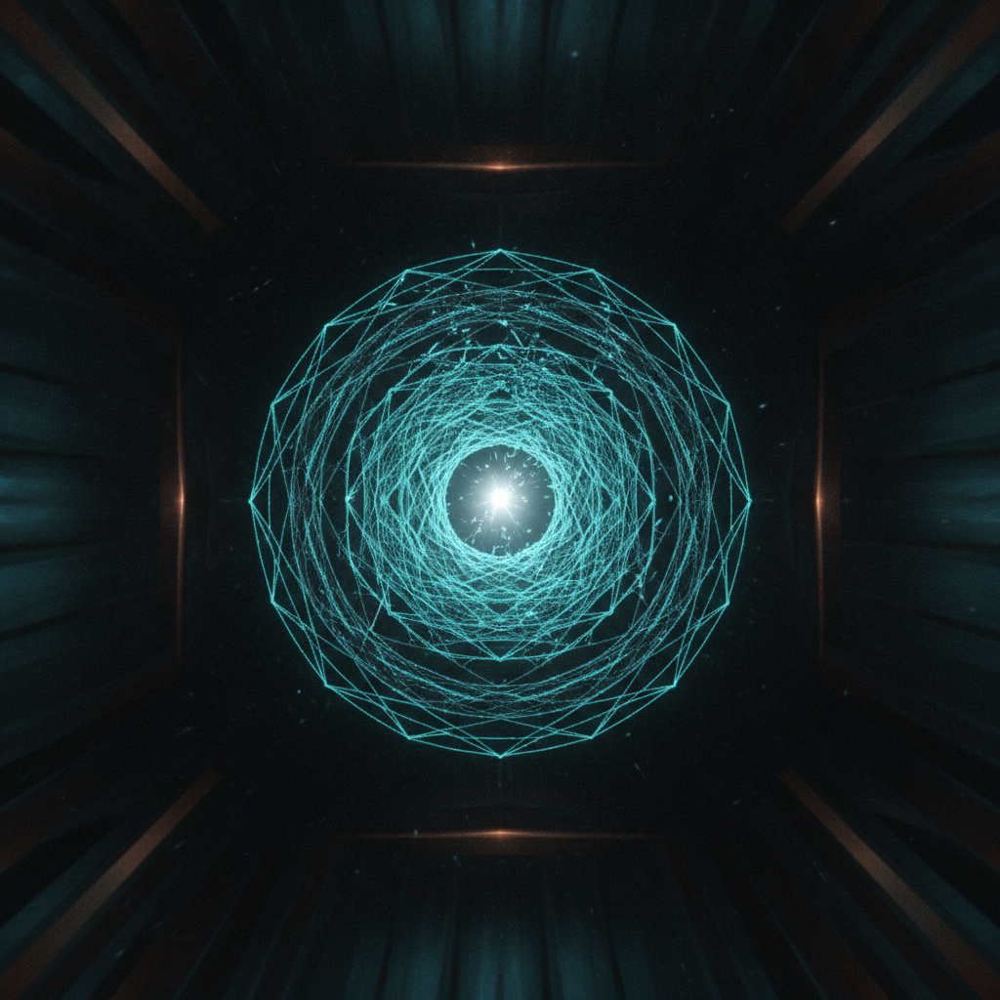
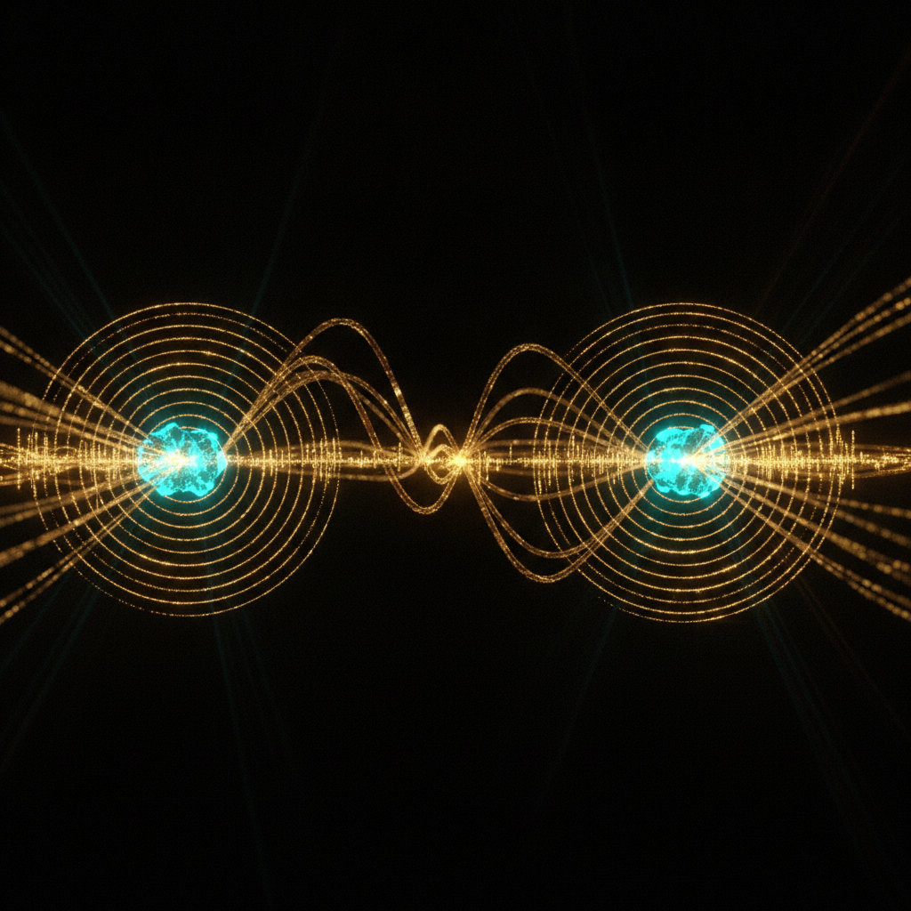
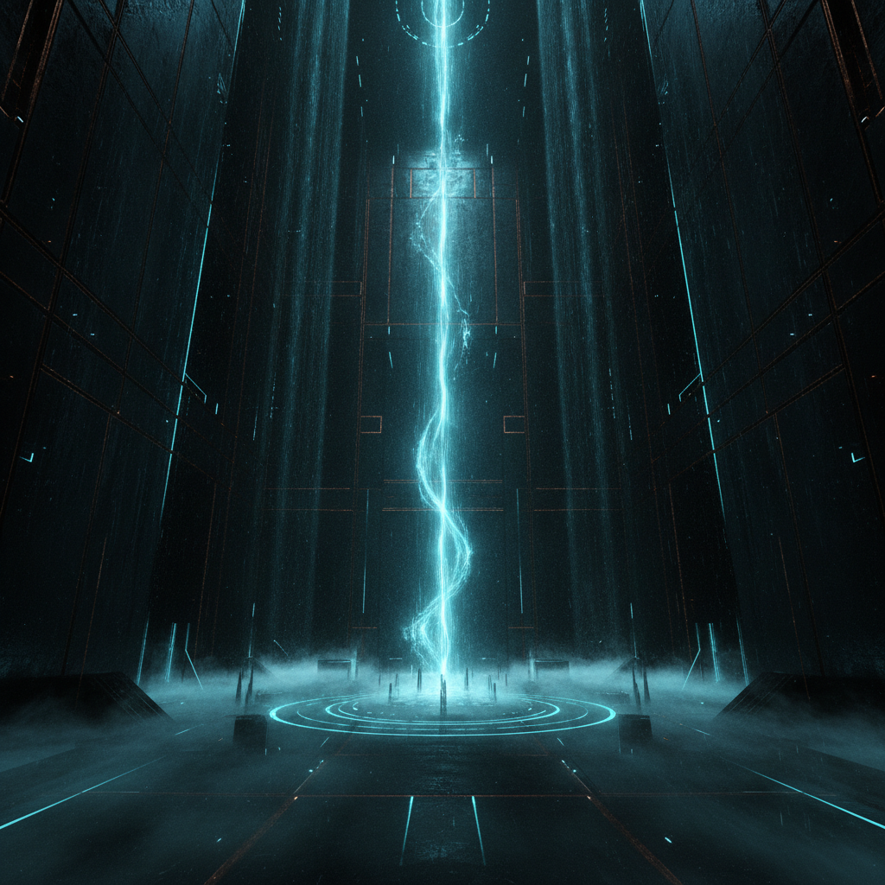
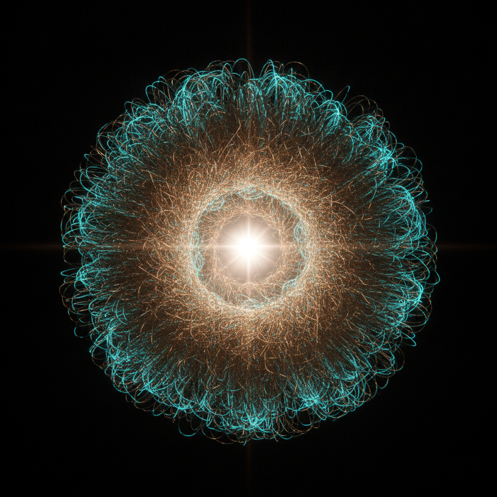

The Prime Lattice
In a silent obsidian observatory, an ancient computational engine synthesizes the chaotic distribution of prime numbers into a cosmic harmony of light and sound.
Production Storyboard

Scene 1 (10.0s)The First Splinter
In the silence of the obsidian vault, the first prime awakens, fracturing the dark.

Scene 2 (10.0s)The Resonance of Primes
Fibers of light stretch across the void, humming with the secret weight of numbers.
Illustrates the symphonic audio pipeline converting prime coordinates into vibrating physical frequencies.

Scene 3 (10.0s)The Runic Prophecy
A silent geometry unfolds, writing its laws in cold, dissolving light.
Visualizes the analytical theories of the agentic assistant as cascading, dissolving patterns.

Scene 4 (10.0s)The Prime Synthesis
All numbers return to one. A singular harmony, complete and forever silent.
Represents the ultimate synthesis where chaos collapses into cosmic harmony and a perfect sine wave.
Introduces the mathematical engine forming the geometric coordinate paths of the Ulam's spiral.